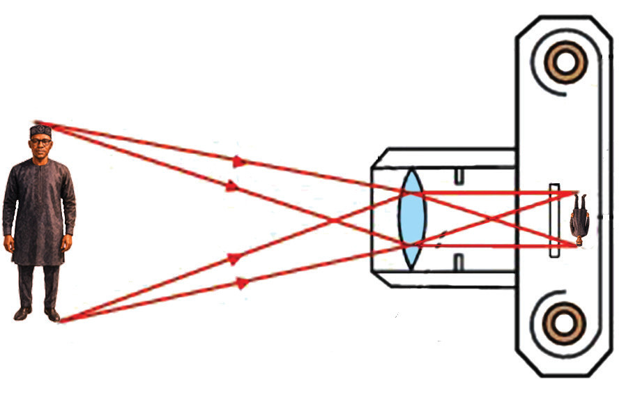

Mode of action of a lens camera
To take a photograph of an object, the image of the object must be sharply focused on the film. This is done by adjusting the distance of the lens from the film. After focusing and correctly setting the aperture size and shutter time, the shutter release button is pressed. The shutter opens to allow light to enter and expose the film to form an image of the object being photographed. The film is then developed to produce a photograph of the object. Figure 6.13 illustrates the image formation by a lens camera.

Magnification of a lens camera
The magnification produced by a lens camera is given as;
Recalling the lens formula,
This can also be written as,
and so,
then,
Hence,
Therefore, magnification produced by the lens camera depends on the focal length of the convex lens used and the object distance .
Construction of a simple lens camera
A simple lens camera can easily be constructed using local materials, including the lens from unused optical instruments. Perform task 6.5 to construct your lens camera.